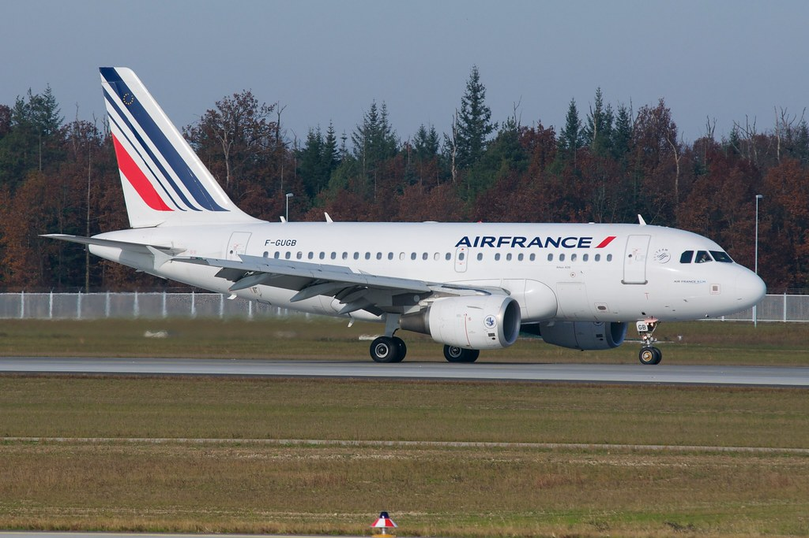
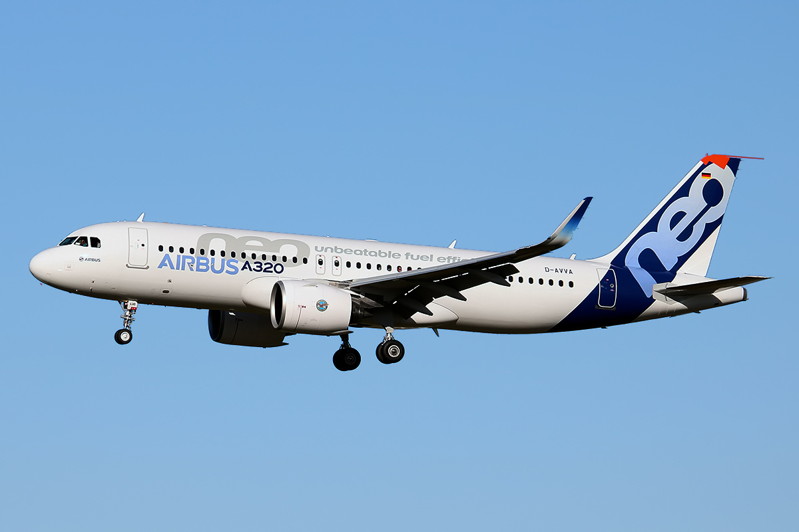
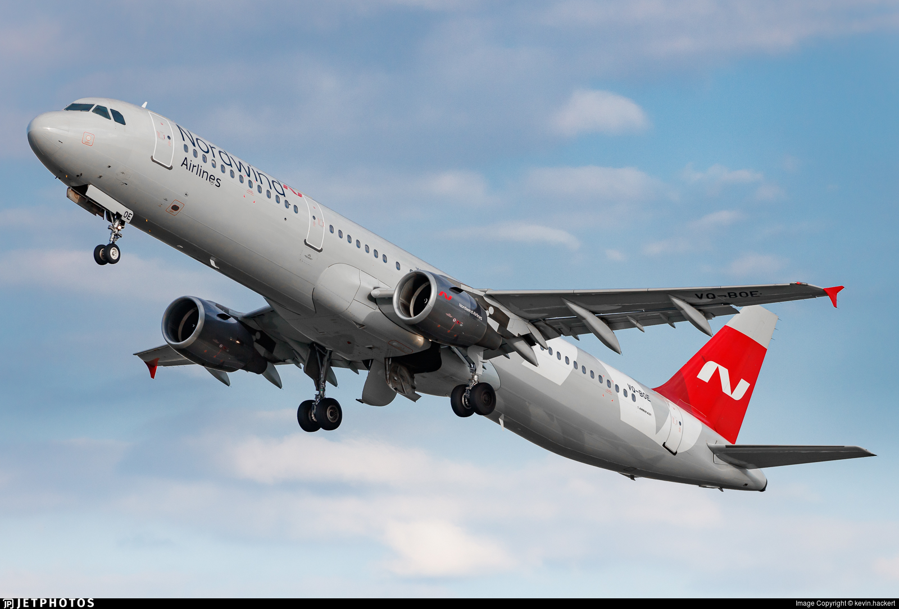

|
Boeing 737: A model narrow-body for airlines worldwide. Renowned for reliability and versatility. |
Boeing produces many narrow-body planes, including the Boeing 737 (a model narrow-body for airlines worldwide. It is renowned for its reliability and versatility). |
Efficiency: |
Fuel-efficient, cost-effective for shorter routes, versatile with access to smaller runways. |
Passenger Capacity: |
Can carry a large number of passengers in a single aisle design. |
Historical Significance: |
Developed in the mid to late 1950s with Boeing 707. Pinnacle in regional and domestic travel, advancing in technology, efficiency, safety, and passenger comfort. |
Airbus manufactures the A320 family of narrow-body aircraft, including the A318, A319, A320, and A321. (each respective model design just gets narrower). These planes are often known for fuel efficiency. |
|

Airbus A318: Fuel-efficient narrow-body aircraft. |
|
Airbus A319: Fuel-efficient narrow-body aircraft. |
|

Airbus A320: Fuel-efficient narrow-body aircraft. |
|

Airbus A321: Fuel-efficient narrow-body aircraft. |
|
Airbus A321 Interior: A single aisle design. |